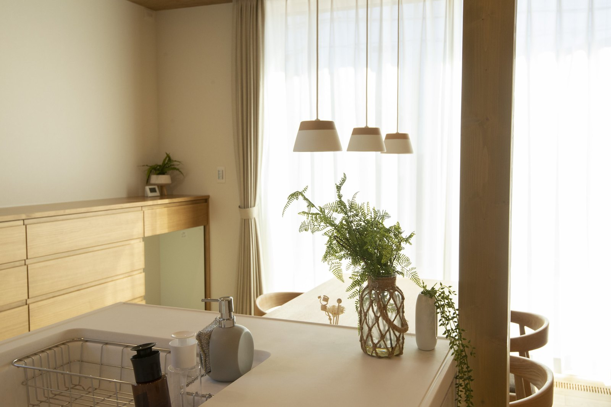

家の値段も金利も上がっている今、家を建てるのは損ではないか。
打ち合わせで、私がよく聞かれる質問です。
この質問を、大工歴43年の社長に動画で聞きました。
30歳から65歳までの35年間を、賃貸に住むご夫婦と、家を建てたご夫婦で比べています。
動画の数字を、ここに書き出しました。
賃貸に35年住むと、5,038万円
家賃9万5,000円の部屋に、ご夫婦で車を2台持って住む場合です。
家を建てると、支払いは7,322万円
次は、4,500万円の住宅ローンで家を建てた場合です。
フラット35Sの金利の優遇を使い、ZEH水準・長期優良住宅・耐震等級3の家を建てたとしています。
ここまでは、賃貸より2,284万円多くかかります。
ただ、家を建てた場合は、戻ってくるお金と減るお金があります。
2026年の「みらいエコ住宅2026事業」では、長期優良住宅は75万円（子育て世帯・若者夫婦世帯）です。
それでも、賃貸の5,038万円より1,434万円多い計算です。
動画の中でも、私は「やっぱり賃貸のほうが安いですね」と答えています。
35年後に、残るものが違う
支払いの合計だけでは比べられない、という話です。
賃貸は、35年住んでも手元に何も残りません。
家を建てた場合は、土地と建物が残ります。
動画では、1,500万円で買った土地と35年たった家が、合わせて2,500万円で売れたとしています。
その2,500万円を差し引くと、こうなります。
住宅ローンには、団体信用生命保険が付きます。
ローンを借りた人に万一のことがあれば、残りのローンは保険で払われます。
賃貸の家賃には、この仕組みはありません。
この計算は、前提で変わる
動画は2025年11月の公開です。
そのまま今にあてはめられない数字があります。
- 金利
住宅ローンの金利は、2026年に上がっています。
利息の1,362万円は、借りる時の金利で変わります - 補助金と控除
補助金は、2026年は長期優良住宅で75万円です。
住宅ローン控除の借入限度額は、長期優良住宅で4,500万円です
（2026・2027年入居の場合） - 売れる値段
土地と建物が35年後にいくらで売れるかは、誰にも分かりません - 家賃
家賃が35年間同じとは限りません
月々の返済の変わり方が分かります。
お金以外の違い
動画の後半は、お金ではない話です。
賃貸のよいところは、仕事や家族に合わせて住み替えられることです。
海の見える町や山の近くへ、気軽に移ることもできます。
社長は、帰れるところがある、実家があるという考え方で、持ち家のほうがいいと話しています。
持ち家では、家の前で車を洗えます。
ペットを飼う部屋を探す手間もありません。

動画では、日の入る窓があれば野菜も育てられると話しています。
どちらが合うかは、どんな暮らしをしたいかで決まります。
社長も動画の最後で、ご自分の場合で計算してから決めてほしいと話しています。
大阪や京都で家賃を払いながら、奈良で建てることを考えている方は、通勤と土地の値段もあわせて比べてください。
大阪・京都に通勤しながら、奈良に住む通勤時間と、土地の値段の違いが分かります。
よくある質問
賃貸に35年住むと、いくら払いますか？
動画の例では、家賃9万5,000円・駐車場2台で月1万4,000円・管理費月6,000円・家財保険年1万2,000円・2年ごとの更新料9万5,000円で、35年間の合計は5,038万円です。
家賃が上がれば、合計はさらに増えます。
動画と同じ金利や補助金で、今も計算できますか？
そのままでは使えません。
動画は2025年11月の公開で、2026年は住宅ローンの金利が上がっています。
補助金も、2026年のみらいエコ住宅2026事業では長期優良住宅が75万円（子育て世帯・若者夫婦世帯）で、動画の80万円とは違います。
今の金利と制度で計算し直してください。
賃貸のほうが向いているのは、どんな人ですか？
転勤が多い方や、住む場所をまだ決めたくない方です。
賃貸は、家族の人数や仕事に合わせて住み替えられます。
持ち家の利点は、35年後に土地と建物が残り、そこに住み続けられることです。
まとめ
- 家賃9万5,000円の賃貸に35年住むと、合計5,038万円です
- 家を建てた場合の支払いは7,322万円。
光熱費の削減・控除・補助金を引くと6,472万円です - 35年後に土地と建物が2,500万円で売れれば、家を建てた場合のほうが約1,066万円少なくなります
- 金利・補助金・売れる値段で、結果は変わります。
今の数字で計算し直してください

奈良の工務店シバサンホームで、
土地さがし・資金計画・打合せの窓口をしています。
モットーはスピード・誠実さ・楽しさ。